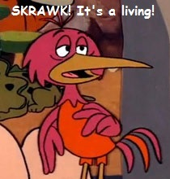

"classy farming"
or maybe, "vegan factory farming"

We like to think of factory farm animals as a kind of fuzzy co-worker. We believe God calls us to "good stewardship." We want the fuzzos to have a nice little life there at the Big Ol' Corporate Farm-o®.
So, we want CAFO farmers to consider a couple of simple, cheap ideas in addition to all they already do to take good care of them:
So, we want CAFO farmers to consider a couple of simple, cheap ideas in addition to all they already do to take good care of them:
- Farm Radios - Play the barn some music. Make it fun, like you'd want for your own cow. Animals like it, it decreases their stress level, gives them something to keep them from being bored. It's going to reduce the level of fear hormones in the meat, too!
- Merciful Slaughter - Can we just knock them humanely out first, like so it's nice, like you would a pet? Fear hormones poison the meat anyway.
"SKRAWK! It's a living!", as the Flinstones bird said.
"This ain't the Ritz," but hey, not too shabby, right?
| back to |  | copy left out | |